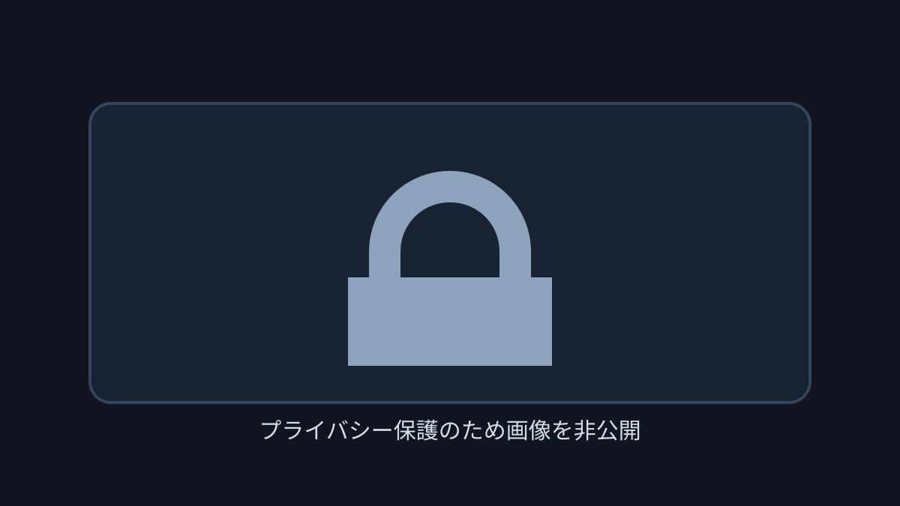

T4 HAND REVIEW
CO Q♠Q♦ の3bet multiway pot / turn set shoveレビュー
GTO基準では、preflopのvalue 3betからflopでsetを大きく取りに行き、SPR約1のturnでshoveした流れに大きな誤りはありません。T♣ はcaller側のstraightを増やす悪いカードですが、Heroはrange上位にあり、worse valueとdrawからまだ取れます。負けているstraightにもfull house / quadsへの改善があります。
Hero: CO
Q♠ Q♦Villain: HJ
A♦ J♣、BTNはflop foldBoard:
K♠ Q♣ 8♦ T♣ 4♠Q♠Q♦はflopでmiddle setです。KKがあり得るためtop setとは呼びません。- multiwayのflop約75% potはhand単体では成立しますが、range全体では小さいsizeも残すとturnのSPRを柔軟にできます。
- turnは結果からcheckへ寄せず、HJのstraightとworse continueの両方を置いて判断します。
ハンド要約
- Hero
- CO
Q♠ Q♦ - Villain
- HJ
A♦ J♣、BTNはflop fold - 形式
- T4 6MAX Cash、100BB effective
- Board
K♠ Q♣ 8♦ T♣ 4♠- ライン
- HJ
3BBopen、CO9BB3bet、BTN cold call、HJ call。flop CO21.38BB into 28.5BB、turn CO69.62BB into 71.26BBshove - Showdown
- HJ:
A-K-Q-J-Tstraight / Hero:Q-Q-Q-K-Tthree of a kind - Result
- HJ won
206.5BB, rake4BB

判断のズレ
| 論点 | その場で置きがちな見立て | どこがズレたか | 次回の基準 |
|---|---|---|---|
| flopの役とsize | top setなので大きく打てばよい | Heroはmiddle setであり、multiwayでは相手2人のcontinue rangeもHUより強いです。ただしKx、two pair、drawから取れるため大きいbet自体は誤りではありません。 | 役名を正確にしたうえで、hand単体のvalueとrange全体の使用sizeを分ける |
| turnのstraight完成 | AJが見えたのでshoveが失敗だった | HJにはAJやJ9sがある一方、KQ、88、強いKx、two pair、drawも残ります。SPR約1のsetを実ハンド1comboだけで降ろしません。 | 悪いturnでは、負けるcomboだけでなくcallするworse handとredrawを同時に数える |
ストリート別レビュー
| ストリート | その時点の見え方 | 実ハンドの位置づけ | 評価 | その場の一手 |
|---|---|---|---|---|
| Preflop | HJの大きめ3BB openにCOが3betし、BTN cold call後にHJもcallしました。postflopは通常のHU 3bet potより各rangeが強く残ります。 | Q♠Q♦ は明確なvalue 3betです。 | 良い | 9BBで3betして問題ありません。cold call後はmultiway前提へ切り替えます。 |
Flop K♠ Q♣ 8♦ | Heroにはpremiumとset、HJにはKx、pocket pair、suited broadway、BTNにも強いcold-call rangeがあります。 | Heroはmiddle setで、ほぼ最上位のvalueです。 | 良い。sizeは大きめ | 約75% potでKxとdrawへ課金できます。range全体では約25〜50% potも残し、弱いKxやdrawを広く続けさせる設計も有力です。 |
Turn T♣ | HJのflop call rangeではAJと一部J9sがstraightになり、caller側のnut分布が強くなります。一方でtwo pairやclub drawも増えます。 | Heroはsetで、straightには負けますがboard pair9枚と残りQ1枚でfull house / quadsへ改善できます。 | shoveは有力 | SPR約1とrange内での順位を踏まえると、worse valueとdrawから取るshoveは十分成立します。pure shoveとまでは固定しません。 |
River 4♠ | all-in後のrunoutで、boardはpairしませんでした。 | HeroはQのthree of a kindのままです。 | 結果確認のみ | river結果ではなくturn時点のrangeとSPRでshoveを評価します。 |
持ち帰り
- multiway 3bet potでは、強いmade handでも相手rangeの強さと次streetのSPRをflop sizeに反映する。
- set対完成straightの場面でも、worse continueと10枚の改善outを確認してからstack-off可否を決める。